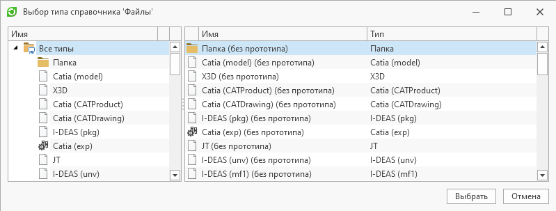

Диалог выбора типов |
Для получения типов справочника доступен упрощенный вариант, позволяющий получить один выбранный в диалоге тип: «Упрощенное получение типа».
Также имеется возможность создания настраиваемого диалога: «Пример работы с диалогом выбора типа»
ПоказатьДиалогВыбораТипа(Имя или Guid справочника[, заголовок]) - Отображает диалог выбора типа объекта справочника. Возвращает тип объекта справочника, если диалог был закрыт нажатием на кнопку "OК" в противном случае - значение null
ТипОбъекта тип = ПоказатьДиалогВыбораТипа("Файлы", "Выбор типа справочника 'Файлы'"); if (тип is not null) Сообщение("Тип", "Выбранный тип: " + тип.Имя);

ПоказатьДиалогВыбораТипа(Имя или Guid справочника[, заголовок]) - Отображает диалог выбора типа объекта справочника. Возвращает тип объекта справочника, если диалог был закрыт нажатием на кнопку "OК" в противном случае - значение null
using System; using TFlex.DOCs.Model.Macros; using TFlex.DOCs.Model.Macros.ObjectModel; using TFlex.DOCs.Model.References.Nomenclature; public class Macro(MacroContext context) : MacroProvider(context) { private readonly Guid[] _разрешенныеТипы = [ // Можно указывать явно Guid'ы типов, либо воспользоваться определенными в системе: new("87078af0-d5a1-433a-afba-0aaeab7271b5"), // Стандартное изделие NomenclatureTypes.Keys.Assembly, // Сборочная единица NomenclatureTypes.Keys.Detail, // Деталь NomenclatureTypes.Keys.StandardItem ]; public void ВыбратьТипыИзДиалога() { var диалог = СоздатьДиалогВыбораТипов("Электронная структура изделий"); // Создаем диалог выбора типов из справочника 'Электронная структура изделий' диалог.ВыборАбстрактныхТипов = false; // Отключаем выбор абстрактных типов диалог.ВыборФлажками = true; // Включаем выбор флажками диалог.АвтоВыборФлажками = true; // Устанавливаем возможность автоматической простановки флажков для дочерних объектов. Автовыбор флажками возможен только в случае, когда ВыборФлажками = true диалог.РазрешенныеТипы = _разрешенныеТипы; // Устанавливаем набор типов для выбора // Задаем типы, которые будут выбраны по умолчанию при открытии диалога ТипОбъекта[] заранееВыбранныеТипы = ПолучитьТипыОбъектов("Электронная структура изделий", ["Деталь", "Сборочная единица"]); диалог.ВыбранныеТипы = заранееВыбранныеТипы; if (!диалог.Показать()) // Отображаем диалог return; ТипОбъекта[] выбранныеТипы = диалог.ВыбранныеТипы; // Получаем выбранные в диалоге типы } }